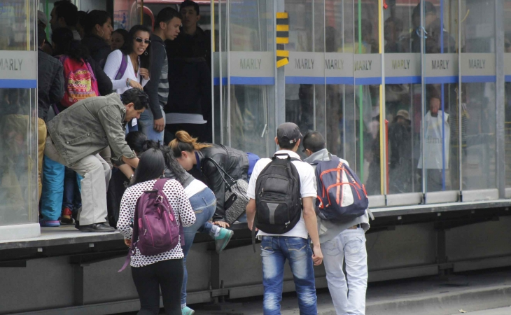

Desafío de diseño y descripción de la problemática
1Desafío de diseño
Consideramos problemas de la sociedad que son frecuentes, se presentan desde hace varios años,no se han solucionado, y seria muy util encontrarles una solucion. Tal el caso de los "colados" en el Transmilenio, por lo cual la pregunta que desidimos abordar es: ¿Cómo podríamos reducir el número de "colados" en las estaciones más concurridas de Transmilenio?
2Descripción de la problemática
La problematica de los "colados" es un adversidad que lleva afectando al sistema de Transmilenio y a los usuarios por varios años, ya que por parte del Transmilenio se generan perdidas en los pasajes y hasta en algunos casos extremos se generan daños en las estaciones para facilitar este acto, esto hace que los usuarios tengan más desconfianza del sistema y genera molestia en los pasajeros que pagaron su paseje y por culpa de estas personas no pueden llegar a sentir incomodidad por este servicio haciendo que baje la confianza y degraden el nivel del Transmilenio. Esta problemática desestimula la implementación de este modelo de transporte en otras ciudades de Colombia que lo nesecitan.
Fases de inspiración

Fases de ideación
Integrantes

Juan David Cardenas
Ing Informatica

Diego Felipe Rodriguez
Ing Informatica